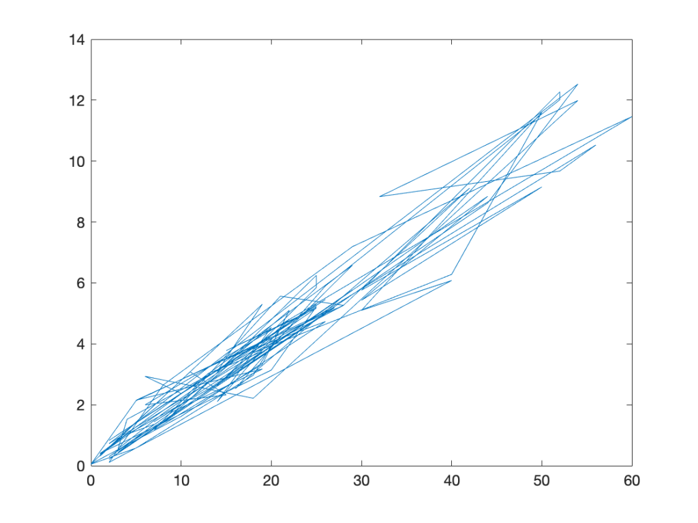
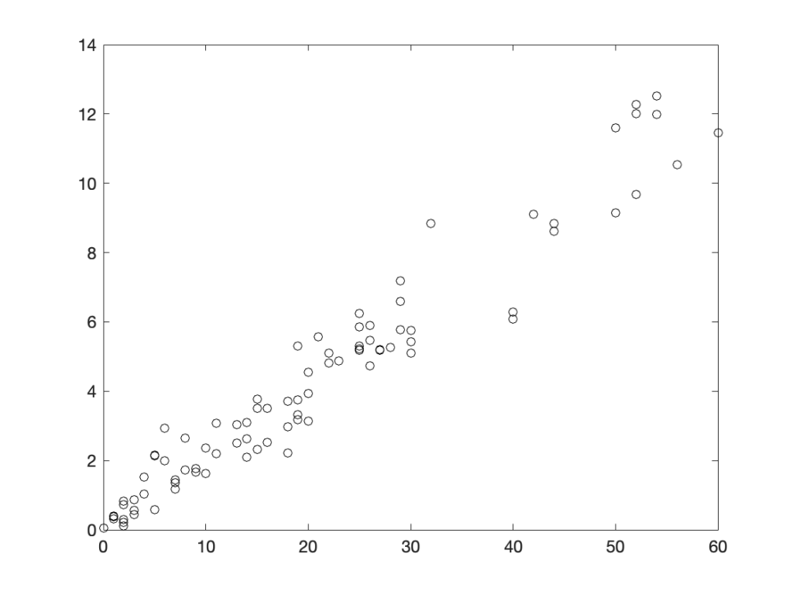
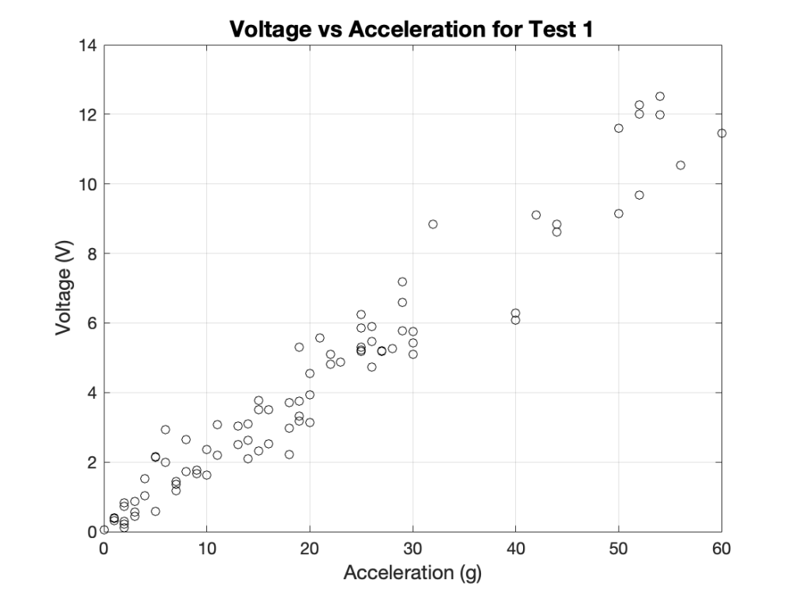
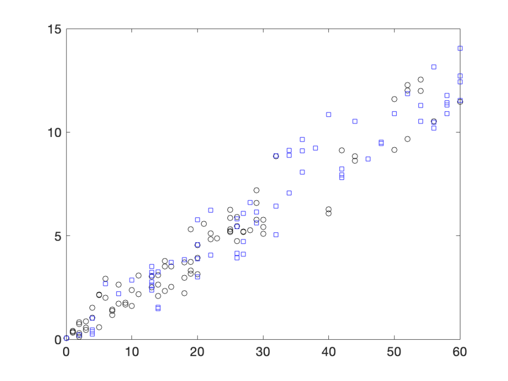
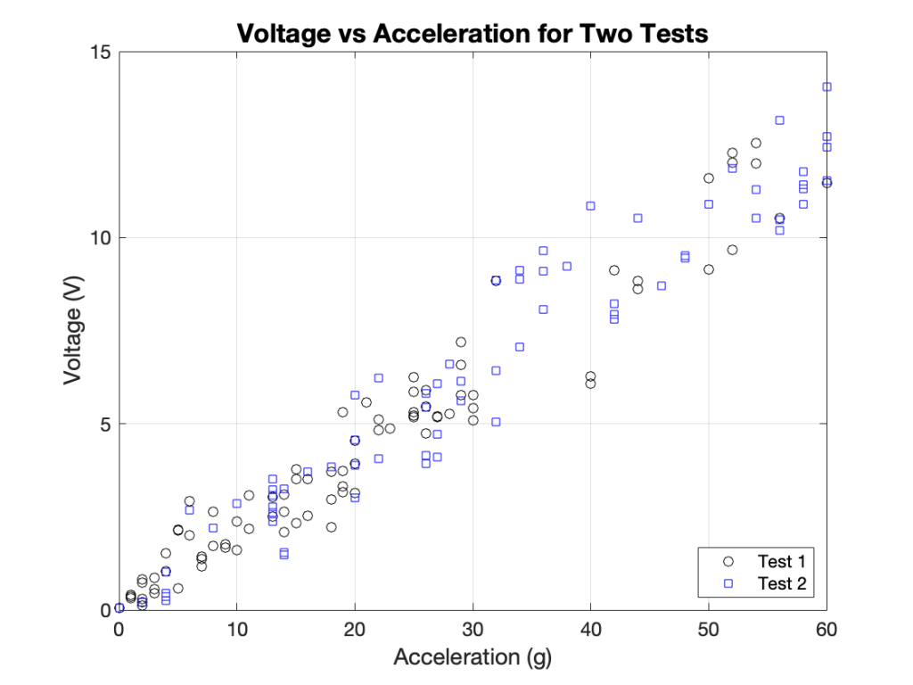
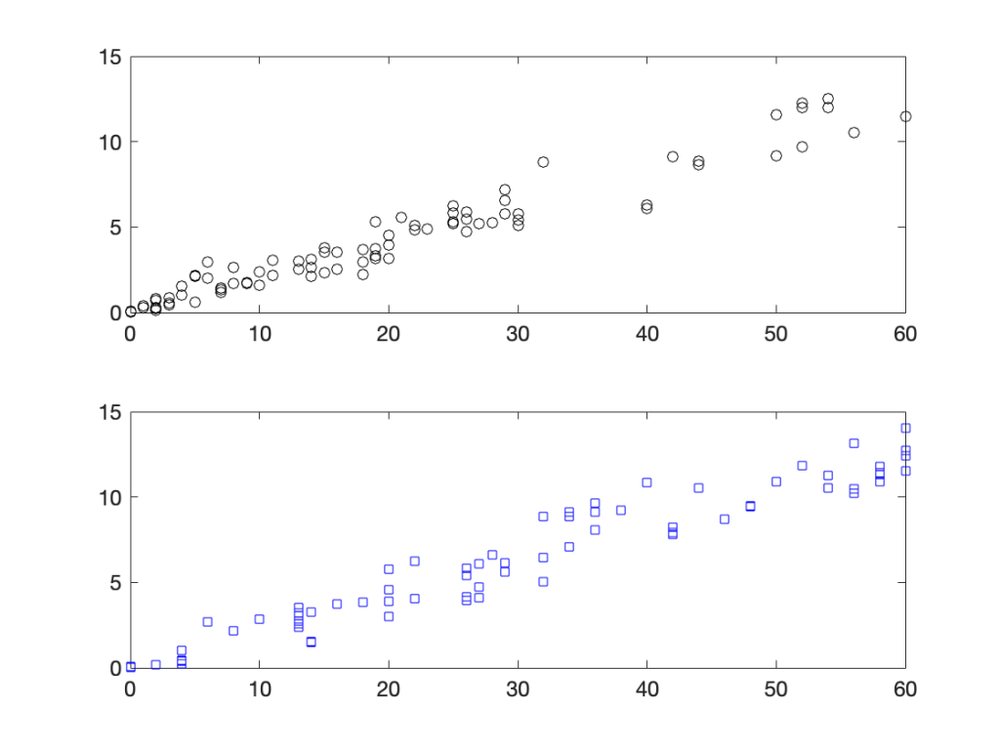
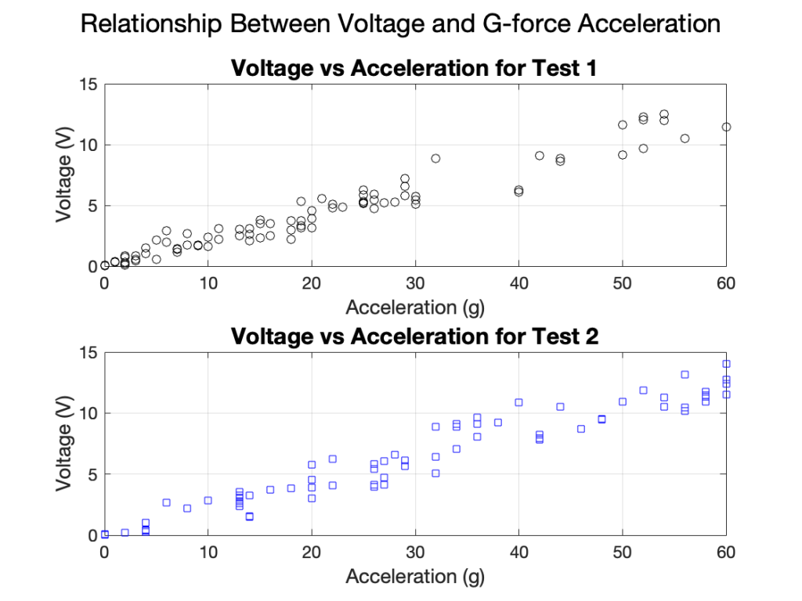

Oct 09, 2026 | 2833 words | 28 min read
5.1.1. PCMs: Data Manipulation and Visualization#
MATLAB is designed to work efficiently with collections of data. In fact, the name MATLAB comes from matrix laboratory, and arrays are fundamental to how MATLAB stores and processes data.
In Python, you often work with individual values or use additional libraries to efficiently perform operations on collections of numerical data. In MATLAB, vectors and matrices are built directly into the language. This makes it possible to perform calculations on entire collections of data without processing each value individually.
In this module, you will learn how to create, access, modify, and perform calculations with arrays. You will also learn how to import data from external files and visualize data using professionally formatted plots.
Arrays in MATLAB#
An array is a collection of data arranged in rows and/or columns. MATLAB commonly uses three types of arrays.
Array Type |
Description |
MATLAB Example |
|---|---|---|
Scalar |
A single element |
|
Vector |
A one-dimensional array containing either a single row or a single column of elements |
|
Matrix |
A two-dimensional array containing multiple rows and columns |
|
The dimensions of an array describe its number of rows and columns. In Array Types in MATLAB, row_vector is a 1-by-4 array, column_vector is a 4-by-1 array, and matrix is a 2-by-3 array.
Creating Vectors#
Vectors can be created in MATLAB by entering elements directly or by using commands that generate a sequence of elements.
Direct Assignment#
Use square brackets ([]) to create a vector. Elements in a row vector can be separated by spaces or commas. For example, both distance and elevation are row vectors:
distance = [0 10 20 30 40 50];
elevation = [1, 2, 3, 4, 5, 6];
To create a column vector, separate the elements with semicolons:
distance = [0; 10; 20; 30; 40; 50];
Creating Evenly Spaced Vectors#
MATLAB provides two common methods for creating vectors with evenly spaced elements: colon notation and the linspace function. The method you use depends on whether you know the desired step size or the desired number of elements.
Colon Notation |
|
|
|---|---|---|
Use when you know… |
The step size between elements |
The number of elements to create |
Syntax |
|
|
Example |
|
|
Result |
|
|
Both examples create the same row vector, but they define the spacing differently.
With colon notation, MATLAB begins at the starting value and repeatedly adds the specified step size without exceeding the ending value. Therefore, the ending value may not always appear in the resulting vector.
For example:
values = 0:10:55;
produces:
0 10 20 30 40 50
With linspace, MATLAB creates the specified number of evenly spaced values between the starting and ending values. The starting and ending values are both included.
Transposing Vectors#
A vector can be changed from a row vector to a column vector, or from a column vector to a row vector, using the transpose operation.
For example, consider the following row vector:
distance = [0 10 20 30 40 50];
The vector can be transposed using the dot-apostrophe (.') operator:
distance_column = distance.';
The resulting vector is:
0
10
20
30
40
50
MATLAB also provides the transpose function, which performs the same operation:
distance_column = transpose(distance);
Creating Matrices#
A matrix is a two-dimensional array containing multiple rows and columns. Matrices are created using the same notation as vectors:
Separate elements in the same row using spaces or commas.
Separate rows using semicolons.
For example, the following code creates a 3-by-4 matrix:
data = [1 2 3 4; 5 6 7 8; 9 10 11 12];
For readability, a matrix can also be written across multiple lines:
data = [1, 2, 3, 4;
5, 6, 7, 8;
9, 10, 11, 12];
Both methods create the same matrix:
1 2 3 4
5 6 7 8
9 10 11 12
When creating a matrix, each row must contain the same number of elements.
Creating Arrays with Built-In Functions#
MATLAB includes built-in functions that can quickly create arrays with specified dimensions. These functions are useful when an array needs to be initialized before values are added or calculations are performed.
Function |
Purpose |
Example |
|---|---|---|
|
Creates an array containing only zeros |
|
|
Creates an array containing only ones |
|
|
Creates an |
|
For example:
data = zeros(3, 4);
creates
0 0 0 0
0 0 0 0
0 0 0 0
Working with Arrays#
After data are stored in an array, individual elements or groups of elements can be accessed and modified using indexing.
Determining Array Size#
When working with arrays, it is often useful to determine how many elements an array contains or the dimensions of the array. MATLAB provides the numel and size functions for this purpose.
The numel function returns the total number of elements in an array.
data = [12 15 18 21 24];
num_values = numel(data)
produces
num_values =
5
The size function returns the dimensions in an array.
data = [10 20 30; 40 50 60];
array_size = size(data)
produces
array_size =
2 3
For a two-dimensional array, the number of rows and columns can also be stored in separate variables using two outputs from size.
[num_rows, num_columns] = size(data)
produces
num_rows =
2
num_columns =
3
A specific dimension can also be requested by providing a second input to size.
size(data, 1)returns the number of rows.size(data, 2)returns the number of columns.
Avoid Hardcoding
Avoid hard-coding the number of elements, rows, or columns when the size of an array may change. Functions such as numel and size allow your code to adapt to the data.
Array Indexing#
In MATLAB, each element of a matrix can be identified by its row and column position using:
array(row, column)
The row is specified first, followed by the column.
MATLAB vs. Python
MATLAB indexing begins at 1, not 0. This is a common source of errors when moving from Python to MATLAB. For example, data(1, 1) refers to the first row and first column.
The same indexing syntax is used to copy elements from an array and to replace elements within an array.
Copying Elements#
Consider the following matrix:
data = [10, 20, 30, 40;
50, 60, 70, 80;
90, 100, 110, 120];
To copy a single element, place the indexed expression on the right side of the assignment operator:
value = data(2, 3);
This stores the element 70 in value.
To copy multiple elements, use a range of indices:
values = data(1:2, 2:3);
This creates a 2-by-2 submatrix:
values =
20 30
60 70
Replacing Elements#
To replace an element in an existing array, place the indexed location on the left side of the assignment operator:
data(2, 3) = 75;
This updates the matrix to:
data =
10 20 30 40
50 60 75 80
90 100 110 120
Multiple elements can also be replaced at once:
data(1:2, 2:3) = [25 35;
65 75];
When replacing multiple elements, the dimensions of the replacement data must match the dimensions of the selected region.
Indexing Shortcuts#
MATLAB provides shortcuts that make it easier to access portions of an array.
Using the Colon Operator#
When used as an index, the colon (:) represents all elements in a specified row or column.
Consider the following matrix:
data = [10, 20, 30, 40;
50, 60, 70, 80;
90, 100, 110, 120];
To access all elements in the second row:
second_row = data(2, :);
To access all elements in the third column:
third_column = data(:, 3);
Using end#
The keyword end represents the last index along a dimension of an array. This allows you to access elements relative to the end of an array without knowing its exact dimensions.
For example, end can be used to access the last column of an array:
last_column = data(:, end);
It can also be combined with colon notation to create a range of indices. To access the second row through the last row:
subset = data(2:end, :);
Because end represents the last index, it can also be used in expressions. For example:
last_two_columns = data(:, end-1:end);
In this expression:
:selects all rows.end-1represents the second-to-last column.endrepresents the last column.end-1:endcreates a range containing the final two columns.
If data has four columns, end is equivalent to 4 and end-1 is equivalent to 3. Therefore,
data(:, end-1:end)
is equivalent to:
data(:, 3:4)
Using end instead of hardcoding an index allows the code to adapt if the dimensions of the array change. For example:
final_values = data(:, end-1:end);
always accesses the final two columns, regardless of the total number of columns in data.
In contrast:
final_values = data(:, 19:20);
only accesses the final two columns if data has exactly 20 columns.
General Rule of Thumb
Use end when the index depends on the size of the array, such as the last row, last column, or final several elements. Use a specific index when the position is fixed by the problem.
Linear Indexing#
In addition to specifying both a row and column, MATLAB allows elements of an array to be accessed using a single index. This is called linear indexing.
When using linear indexing, MATLAB numbers the elements by moving down each column before moving to the next column.
Consider the following matrix:
data = [10, 20, 30;
40, 50, 60;
70, 80, 90];
The linear indices of the elements are:
Column 1 |
Column 2 |
Column 3 |
|
|---|---|---|---|
Row 1 |
1 |
4 |
7 |
Row 2 |
2 |
5 |
8 |
Row 3 |
3 |
6 |
9 |
Therefore value = data(5); would copy the element 50.
Linear indexing can also be used to access multiple elements:
values = data(2:4) % copies values 40, 70, and 20
or nonconsecutive elements by providing a vector of indices:
values = data([1 5 9]); % copies values 10, 50, and 90
Linear indexing can also be used to replace elements:
data(5) = 55;
For two-dimensional arrays, row and column indexing is often easier to interpret when working with blocks of data. Linear indexing is particularly useful when working with vectors or when the position of an element is already known as a single index.
Concatenating Arrays#
Concatenation combines two or more arrays into a larger array. Arrays can be concatenated horizontally or vertically as long as their dimensions are compatible.
Horizontal Concatenation#
Arrays can be placed side-by-side when they have the same number of rows. Use spaces or commas to concatenate arrays horizontally.
temperature = [20 22 24];
pressure = [100 105 110];
data = [temperature pressure];
The resulting array is:
data =
20 22 24 100 105 110
Vertical Concatenation#
Arrays can be stacked when they have the same number of columns. Use a semicolon to concatenate arrays vertically.
temperature = [20 22 24];
pressure = [100 105 110];
data = [temperature; pressure];
The resulting array is:
data =
20 22 24
100 105 110
Concatenation Dimensions
For horizontal concatenation, the arrays must have the same number of rows. For vertical concatenation, the arrays must have the same number of columns.
Summary Statistics#
MATLAB includes built-in functions for calculating common summary statistics from arrays of data.
Consider the following vector:
temperature = [21.2 22.5 20.8 23.1 22.5];
Common summary functions include:
Function |
Description |
Example |
|---|---|---|
|
Calculates the arithmetic mean |
|
|
Calculates the median |
|
|
Determines the most frequently occurring value |
|
|
Determines the minimum value |
|
|
Determines the maximum value |
|
|
Calculates the standard deviation |
|
For example:
avg_temperature = mean(temperature)
max_temperature = max(temperature)
produces
avg_temperature =
22.0200
max_temperature =
23.1000
Summary Statistics and Matrices#
When a summary function is applied to a matrix, MATLAB performs the calculation column-wise by default.
data = [10, 20, 30;
40, 50, 60;
70, 80, 90];
column_means = mean(data);
produces:
column_means =
40 50 60
MATLAB calculates the mean of each column and returns the results as a row vector.
To calculate a single statistic using all elements of a matrix, use all:
overall_mean = mean(data, "all");
which produces:
overall_mean =
50
The “all” option can also be used with other summary functions when a single result for the entire array is needed.
Element-by-Element Operations#
MATLAB can perform calculations on entire arrays without processing each element individually. These calculations are called element-by-element operations because the operation is applied to corresponding elements of the arrays.
Consider the following vectors:
panel_length = [2 4 6 8];
panel_width = [1 2 3 4];
Addition and subtraction can be performed directly:
sum_values = panel_length + panel_width;
difference = panel_length - panel_width;
For multiplication, division, and exponentiation, use a period (.) before the operator.
Operation |
MATLAB Operator |
Example |
|---|---|---|
Addition |
|
|
Subtraction |
|
|
Multiplication |
|
|
Division |
|
|
Exponentiation |
|
|
For example:
area = panel_length .* panel_width;
produces:
area =
2 8 18 32
Each element in panel_length is multiplied by the corresponding element in panel_width.
Operations with Scalars and Arrays#
Element-by-element calculations can also involve a scalar and an array. A scalar is applied to each element of the array.
For example:
distance = [10 20 30 40];
new_distance = distance + 5;
produces:
new_distance =
15 25 35 45
Similarly, an array can be multiplied or divided by a scalar without using a period:
double_distance = distance * 2;
half_distance = distance / 2;
However, some operations require the element-by-element operator depending on the order of the operands. For example, dividing a scalar by an array requires ./:
test_time = 100 ./ distance;
and raising each element of an array to a power requires .^:
distance_squared = distance .^ 2;
Importing Data#
Engineering data are often collected or provided in external files rather than entered directly into a MATLAB script. MATLAB can import numeric data from files such as .csv, Excel, and text files using the readmatrix function.
Using readmatrix#
The readmatrix function reads data from an external file and stores the result as an array.
data = readmatrix('experiment_data.csv');
The general syntax is:
variable = readmatrix('filename');
The data file must be accessible to MATLAB. When working with course files, the data file should be saved in the same folder as the MATLAB script unless another file location is specified.
Use a descriptive variable name when storing imported data. For example:
temperature_data = readmatrix('temperature_data.csv');
Working with Imported Data#
Once the data are imported, the indexing techniques from earlier in this module can be used to extract the rows or columns needed for analysis.
For example, if the first column contains time and the second column contains temperature:
time_col = temperature_data(:, 1);
temperature = temperature_data(:, 2);
This creates separate vectors containing the time and temperature data to use later in the script.
Handling NaN Values#
When importing data using readmatrix, MATLAB may represent text or missing numeric data as NaN, which stands for Not a Number.
For example, consider a file containing:
Time,Temperature
0,20.1
1,21.3
2,22.0
When the file is imported using:
data = readmatrix('temperature_data.csv');
the text in the header may appear as NaN values in the imported array.
data =
NaN NaN
0 20.1
1 21.3
2 22.0
Array indexing can be used to extract only the numeric data needed for analysis:
time_col = data(2:end, 1);
temperature = data(2:end, 2);
In this example, indexing begins at row 2 to exclude the header row represented by NaN values.
Alternatively, if the number of header lines is known, the NumHeaderLines option can be used with readmatrix to skip those lines when importing the data.
data = readmatrix('temperature_data.csv', 'NumHeaderLines', 1);
In this example, MATLAB skips the first line of the file and imports the remaining data.
data =
0 20.1
1 21.3
2 22.0
Plotting Data#
Plots are used to visualize relationships between variables and communicate patterns in engineering data. In MATLAB, the plot function creates an x-y plot using two vectors of corresponding data.
Creating an x-y Plot#
The basic syntax for creating an x-y plot is plot(x,y). The first input contains the independent variable plotted on the x-axis, and the second input contains the dependent variable plotted on the y-axis.
For example, suppose acceleration and voltage contain experimental data from an accelerometer test:
plot(acceleration, voltage)
By default, MATLAB plots the data using a solid line connecting consecutive data points.
Although MATLAB successfully creates a plot, the default display is not necessarily the most appropriate way to represent the data. In this example, each point represents an individual experimental measurement. Connecting the measurements with lines implies a relationship between consecutive observations that may not be meaningful.


Fig. 5.1 Voltage versus acceleration using the default MATLAB line style.#
Selecting a Plot Style#
The way data are displayed should reflect the type of data being presented. MATLAB allows the appearance of a plot to be controlled using a formatting string as an additional input to the plot function.
plot(x, y, 'format')
For experimental or measured data, individual markers can be used to show each observation without connecting consecutive data points.
For example, the voltage measurements can be plotted using black circle markers (ko):
plot(acceleration, voltage, 'ko')
Using markers makes each experimental observation visible without implying that consecutive observations are directly connected.
In contrast, a line is appropriate when the values represent a continuous relationship, such as a theoretical or modeled relationship.


Fig. 5.2 Voltage versus acceleration displayed using markers.#
Customize Plot Appearance
Visit MATLAB plot Documentation to explore additional line styles, markers, colors, and formatting options.
Formatting a Plot for Technical Presentation#
A technical plot should provide enough information for the reader to understand the data being presented. This includes a descriptive title, labeled axes, units when applicable, and grid lines that help the reader interpret values.
MATLAB provides several functions for adding these elements to a plot.
Function |
Purpose |
|---|---|
|
Adds a title to the plot |
|
Labels the x-axis |
|
Labels the y-axis |
|
Displays grid lines |
The voltage and acceleration plot can be formatted using:
plot(acceleration, voltage, 'ko')
title('Voltage vs Acceleration for Test 1')
xlabel('Acceleration (m/s^2)')
ylabel('Voltage (V)')
grid on
The title identifies the data being presented, while the axis labels identify the variables and their units. Grid lines make it easier to estimate values from the plot.


Fig. 5.3 Formatted voltage versus acceleration plot.#
Plotting Multiple Data Sets#
Multiple data sets can be displayed on the same axes to make comparisons between related data easier.
By default, calling plot again replaces the existing plot. The hold on command keeps the current plot so that additional data can be added to the same axes. The optional hold off command returns the axes to MATLAB’s default plotting behavior.
For example, data from two sensor tests can be plotted on the same axes:
plot(acceleration_1, voltage_1, 'o')
hold on
plot(acceleration_2, voltage_2, 'o')
hold off
Each call to plot adds a different data set to the same axes.


Fig. 5.4 Voltage and acceleration data from two sensor tests.#
The data sets should also be formatted so that they are visually distinguishable.
Why is “hold off” optional?
The hold off command is not always required. It returns the current axes to the default behavior in which a new plotting command replaces the existing plot.
Use hold off when additional plots later in the script should not be added to the same axes. If no additional plotting commands follow, hold off may be omitted.
Adding a Legend#
When multiple data sets are displayed on the same axes, a legend identifies which plotted data correspond to each data set.
The legend function lists the data sets in the order they were plotted.
The completed comparison can be formatted using:
plot(acceleration_1, voltage_1, 'ko')
hold on
plot(acceleration_2, voltage_2, 'bsquare')
hold off
title('Voltage vs Acceleration for Two Tests')
xlabel('Acceleration (m/s^2)')
ylabel('Voltage (V)')
legend('Test 1', 'Test 2')
grid on
The legend allows the reader to distinguish between the two sets of experimental data.


Fig. 5.5 Formatted comparison of two sensor tests.#
Multiple Plots in One Figure#
Sometimes related plots are easier to compare when they are displayed separately within the same figure. The subplot function divides a figure into a grid of plotting areas called axes.
The syntax is:
subplot(rows, columns, position)
The first two inputs define the arrangement of the plots, and the third input identifies which position should be active.
For example, the following code creates two plots arranged vertically:
subplot(2, 1, 1)
plot(acceleration_1, voltage_1, 'ko')
subplot(2, 1, 2)
plot(acceleration_2, voltage_2, 'bsquare')
subplot(2, 1, 1) selects the first position in a grid with two rows and one column. The next plot command creates the plot in that position.
subplot(2, 1, 2) then selects the second position for the next plot.


Fig. 5.6 Two plots arranged vertically using subplot.#
Formatting Multiple Plots#
Each plot can be formatted independently after its subplot command. The sgtitle function adds a title that applies to the entire figure.
subplot(2, 1, 1)
plot(acceleration_1, voltage_1, 'o')
title('Voltage vs Acceleration for Test 1')
xlabel('Acceleration (m/s^2)')
ylabel('Voltage (V)')
grid on
subplot(2, 1, 2)
plot(acceleration_2, voltage_2, 'o')
title('Voltage vs Acceleration for Test 2')
xlabel('Acceleration (m/s^2)')
ylabel('Voltage (V)')
grid on
sgtitle('Relationship between Voltage and G-force Acceleration')
Each title, xlabel, ylabel, and grid command applies to the currently active subplot. sgtitle provides a descriptive title for the complete figure.


Fig. 5.7 Formatted subplots with an overall figure title.#
Plotting Checklist#
Before considering a technical plot complete, check each of the following:
Check |
Requirement |
|---|---|
Variables |
The independent variable is plotted on the x-axis and the dependent variable is plotted on the y-axis. |
Plot Style |
The plot style is appropriate for the data. Use markers for individual experimental measurements and lines when the data represent a continuous relationship. |
Title |
The plot has a descriptive title that communicates what is being shown. |
Axis Labels |
Both axes are labeled with the variable and units, when applicable. |
Legend |
A legend is included when multiple data sets are plotted on the same axes. |
Data Sets |
Different data sets are visually distinguishable when plotted together (using color and marker/line style). |
Grid |
Grid lines are included. |
Subplots |
When subplots are used, each plot is clearly labeled and the complete figure has an appropriate overall title. |